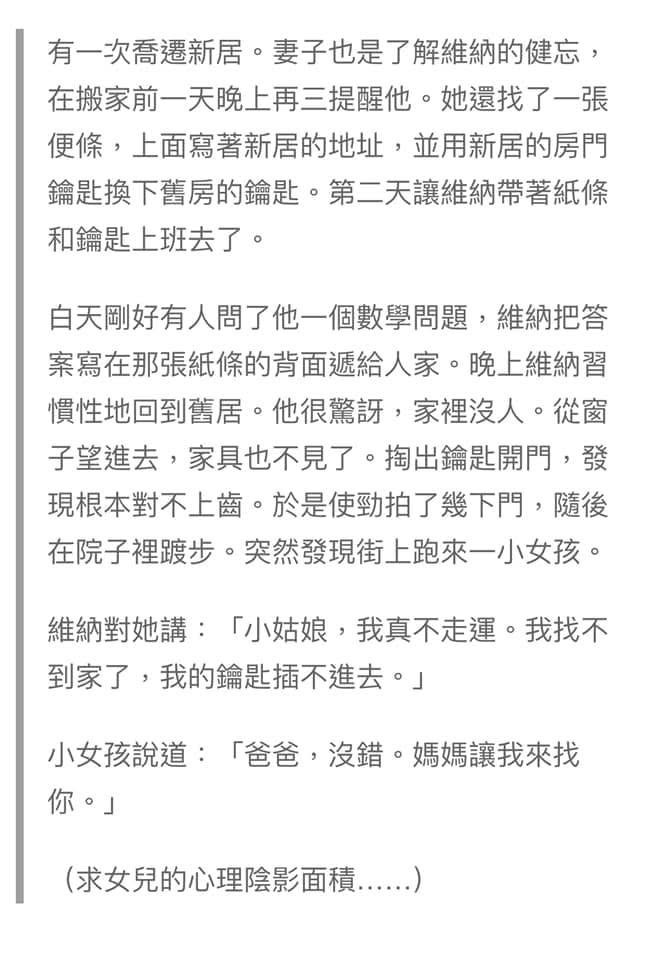
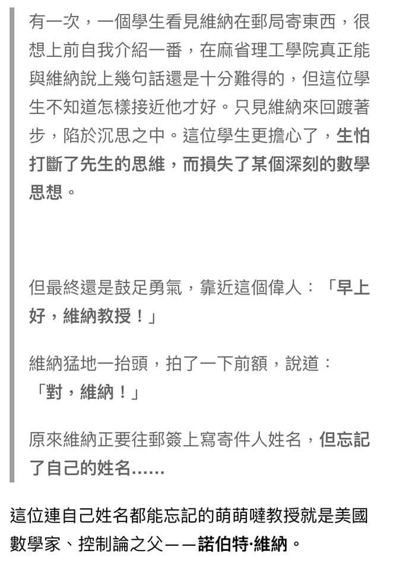

近代「控制論」的開山祖師
— Norbert Wiener
今天準備了一些數學題例，本來想談談我認為的好問題、好的教學方式，介紹「專家模式 」，讓家長們瞭解 將問題看得透 想得深 遠比作得快更重要；能獨立面對 、析新問題，比熟練地完成10道問題更有價值得多！
但事後看來 即使兩倍的時間也很難說得完，就留待後話吧～
前兩天在構思直播內容「超前學習」時，腦海浮起一位天才 ～近代「控制論」的開山祖師—Norbert Wiener。
Wiener自幼以神童著稱，11歲讀大學、15歲進哈佛唸研究所、18歲獲博士學位，他著名的自傳-昔日神童（My Childhood and Youth）回憶了苦澀的童年與青少年成長。
這社群許多人是資優生的父母，看著孩子在學習中努力、成長、挫折、克服困難...而我們自己年紀漸長，智慧增加，智力卻衰退，記憶力一年不如一年，讓人懊惱！
Wiener以健忘著稱 兩則小故事可以提供我們安慰 ～
https://www.facebook.com/groups/695697124716309/permalink/704750637144291/

